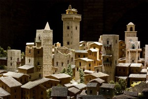
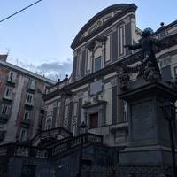
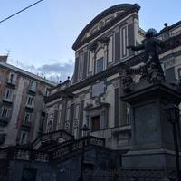

Entre siglo XVIII a. C. y el siglo II existió en Cerdeña la cultura nurágica. Durante la Edad del Hierro se sucedieron varias culturas que pueden ser diferenciadas en tres grandes núcleos geográficos, la del Lacio Antiguo, la de Magna Grecia y la de Etruria. Una de estas culturas, los ligures, fueron un enigmático pueblo que habitaba en el norte de Italia, Suiza y el sur de Francia (Niza).
Con el emperador Diocleciano se reorganizó el Imperio, pero tras Constantino I el Grande no volvió a estar unificado puesto que Teodosio I el Grande lo dividió entre sus dos hijos, Arcadio y Flavio Honorio, adjudicándoles a uno el Imperio romano de Oriente —con sede en Constantinopla— y al otro el Imperio romano de Occidente. Las invasiones bárbaras pondrán fin al Imperio Occidental en 476, dando paso a la Edad Media.
Los ostrogodos eran un grupo de godos que habían sido sojuzgados por los hunos, pero tras su liberación de estos, Teodorico el Grande, con la bendición del emperador romano de Oriente, condujo a su pueblo a Roma en 488. En la península gobernaba el hérulo Odoacro tras deponer al último emperador romano de Occidente en 476, pero tras una campaña en el norte de la península, Teodorico tomó la capital, Rávena, matando a Odoacro en 493.
En 526 la muerte de Teodorico acabó con la paz, heredando Italia su nieto, Atalarico, que murió sin hijos lo que produjo una crisis que llevó al reino a la desaparición. Bajo Justiniano I, el Imperio romano de Oriente inició una serie de campañas con el objetivo de reconstruir la unidad mediterránea. La debilidad del reino ostrogodo, y los deseos del Imperio de recobrar la ciudad de Roma convirtieron a Italia en un objetivo. En 535 el general Belisario invadió Sicilia y marchó a través de la península, tomando Nápoles y llegando a Roma en 536. Prosiguió hacia el norte y tomó Mediolanum (Milán) y Rávena en 540, y para el 561 había pacificado la zona.
El turismo es uno de los sectores con más crecimiento de la economía nacional con 50,5 millones de turistas por año y un total de 42.700 millones de dólares generados, siendo así el cuarto país con más turismo del mundo. Roma, la capital, es uno de los destinos más visitados del mundo, con una media de 7 a 10 millones de turistas al año. El coliseo de Roma con cuatro millones de turistas, es el décimo tercer séptimo lugar más visitado del mundo. También se beneficia del turismo religioso y cultural que genera la vecindad a la Ciudad del Vaticano con lugares tan visitados como los Museos Vaticanos o la Basílica de San Pedro.
 
